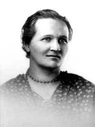

An atom: a tiny nucleus and its electrons.원자: 작은 핵과 그 둘레의 전자
In the nucleus. Positive charge. Its number defines the element.원자핵 안에 있습니다. 양전하. 이 개수가 원소를 결정합니다.
In the nucleus. No charge. About the same mass as a proton.원자핵 안에 있습니다. 전하가 없습니다. 질량은 양성자와 거의 같습니다.
Outside the nucleus. Negative charge. Nearly 2,000 times lighter than a proton.원자핵 바깥에 있습니다. 음전하. 양성자보다 2,000배 가까이 가볍습니다.
Ten pictures of the atom.원자를 보는 열 가지 그림
Ancient Atomism고대 원자론
Matter is made of tiny particles that cannot be cut.물질은 더 쪼갤 수 없는 작은 알갱이로 이루어져 있다.
Dalton돌턴
Atoms are solid balls. Each element has its own kind.원자는 단단한 공이다. 원소마다 종류가 다르다.
Thomson톰슨
Plum pudding: electrons inside a positive blob.푸딩 모형: 양전하 덩어리 속에 전자가 박혀 있다.
Rutherford러더퍼드
A tiny dense nucleus. The rest is empty space.아주 작고 조밀한 핵. 나머지는 빈 공간이다.
Bohr보어
Electrons on orbits with fixed energies.전자는 정해진 에너지의 궤도에 있다.
Sommerfeld좀머펠트
Elliptical orbits and sub-levels.타원 궤도와 세부 준위가 있다.
de Broglie드브로이
Electrons also behave like waves.전자는 파동처럼도 행동한다.
Schrödinger슈뢰딩거
Waves give orbitals: where an electron is likely.파동방정식으로 오비탈, 즉 전자가 있을 만한 영역을 구한다.
Heisenberg하이젠베르크
Position and speed cannot both be known exactly.위치와 속도를 동시에 정확히 알 수는 없다.
Electron cloud전자구름
No fixed path, only the probability of finding an electron.정해진 경로는 없고, 전자를 찾을 확률만 있다.
A unit for tiny energies: the eV.아주 작은 에너지를 재는 단위, eV
The energy one electron gains when it moves through 1 volt.전자 하나가 1 V의 전압 차를 지나며 얻는 에너지.
eV: the energy of room-temperature motioneV: 상온에서 입자가 가진 운동 에너지
eV per photon, red to violeteV (광자 하나당, 빨강에서 보라까지)
eV, typical in chip-factory plasmaeV, 반도체 공정 플라즈마 전자의 대표값
eV needed to free the electroneV, 전자를 떼어내는 데 필요한 에너지
Jump between levels, and see the light.준위 사이를 뛰어 보며 빛을 확인하세요
Excitation & De-excitation여기와 탈여기 (Excitation & De-excitation)
Absorb energy, rise. Fall back, glow.에너지를 받으면 오르고, 내려오면 빛납니다
Excitation & De-excitation여기와 탈여기 (Excitation & De-excitation)
Each atom lights up in its own colors.원자마다 자기만의 색으로 빛납니다
A fingerprint지문
Four visible lines: 656, 486, 434, 410 nm. Every element has its own set.가시광선 영역의 선 네 개: 656, 486, 434, 410 nm. 원소마다 자기만의 선 묶음이 있습니다.
Orange-red glow주황빛 붉은색
Neon has strong lines around 585–700 nm, so the tube glows orange-red.네온은 585~700 nm 부근에 강한 선이 있어 관이 주황빛 붉은색으로 빛납니다.
OES
Optical Emission Spectroscopy reads the glow to see what is in the plasma, or when an etch has finished.Optical Emission Spectroscopy는 빛을 읽어 플라즈마 속 성분이나 Etch가 끝나는 시점을 알아냅니다.

Cecilia Payne-Gaposchkin
Stars are mostly hydrogen and helium별은 대부분 수소와 헬륨
In her PhD thesis she analysed the absorption lines in starlight with the new atomic physics of the time. Everyone believed stars had roughly the same mix of elements as the Earth. Her answer: they are made mostly of hydrogen and helium.박사 학위 논문에서 당시 새로 나온 원자물리학으로 별빛의 흡수선을 분석했습니다. 모두가 별의 성분이 지구와 비슷하다고 믿던 때였습니다. 그녀가 얻은 답은, 별이 대부분 수소와 헬륨으로 이루어져 있다는 것이었습니다.
Too strange to accept받아들이기엔 너무 낯선 결과
Henry Norris Russell, the leading astronomer of the day, told her it could not be right, and she wrote in her thesis that the result was "almost certainly not real". A few years later Russell reached the same conclusion. Astronomer Otto Struve later called her thesis "the most brilliant PhD thesis ever written in astronomy".당대 최고의 천문학자 헨리 노리스 러셀은 이 결과가 맞을 리 없다고 했고, 그녀는 논문에 이 결과가 "거의 확실히 실제가 아니다"라고 적어야 했습니다. 몇 년 뒤 러셀도 같은 결론에 이르렀습니다. 천문학자 오토 스트루베는 이 논문을 "천문학 역사상 가장 뛰어난 박사 학위 논문"이라고 불렀습니다.
A string of firsts이어진 최초의 기록
In 1956 she became the first woman promoted to full professor in Harvard’s Faculty of Arts and Sciences, and then the first woman to chair a department at Harvard.1956년 하버드 대학교 인문과학대학에서 여성 최초로 정교수가 되었고, 이어서 하버드에서 여성 최초로 학과장을 맡았습니다.
How hard is it to pull one electron off?전자 하나를 떼어내기는 얼마나 어려울까?
Pull an electron off, and let one back.전자를 떼어내고, 다시 붙잡히고
Ionization & Recombination이온화와 재결합 (Ionization & Recombination)
Atom + fast electron → ion + 2 electrons원자 + 빠른 전자 → 이온 + 전자 2개
A collision with at least 13.6 eV (for hydrogen) knocks an electron out.13.6 eV 이상(수소 기준)의 충돌이 전자를 떼어냅니다.
Ion + electron → atom + light이온 + 전자 → 원자 + 빛
A free electron is captured and the extra energy leaves as a photon.자유 전자가 붙잡히고 남는 에너지가 광자로 나갑니다.
Knock it out, catch it back.떼어내고, 다시 붙잡는 순간
Ionization & Recombination이온화와 재결합 (Ionization & Recombination)